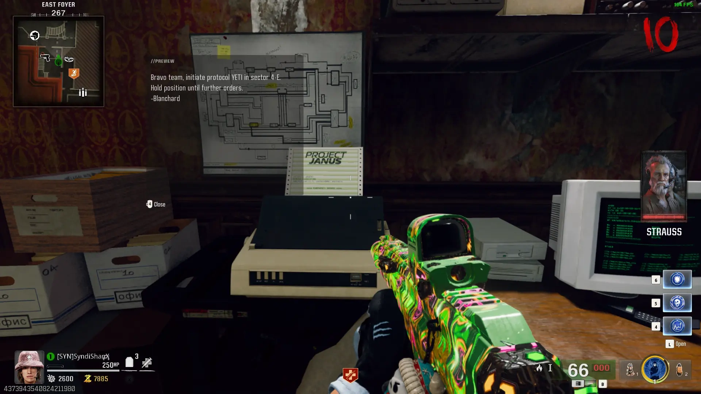
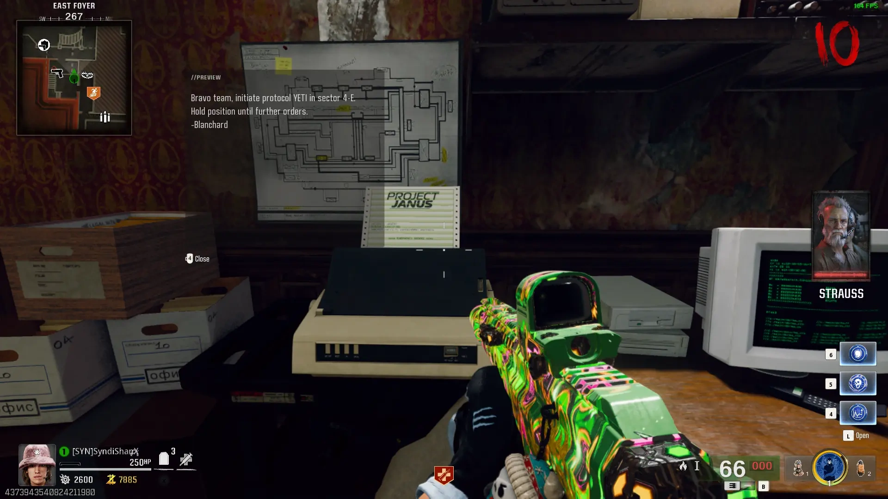

Easter Egg Song
Interact with 3 Bunny Headphones


Free Powerups
Shoot Powerup Items around the Map


After Shooting all of the Other Powerups a Fire Sale Powerup will Spawn

Free Perk
Unknown
Interact with the 4 Computers around the Map


Raygun Mark II
Shoot the 4 Crystals around the Map with the Raygun Mark II until one Drop an Empty Canister, then Pick it Up

 



Throw a Khasmir Device near the Window under Double Tap and pick up an Empty Canister


Toxic Canister
Obtain 4 Seeds by Shooting the Purple Mushrooms around the Map with Napalm Burst

Place the Canister into the Yellow Machine in the Conservatory

Place a Seed in all 4 Growing Chambers and Protect them from the Zombies that Spawn


Once all 4 Seeds have Grown you can pick up the Toxic Canister from the Machine

Explosive Canister
Place the Canister into the Yellow Machine at Shem's Henge

Interact with the Machine to Spawn an Abomination, have it Beam the 3 Small Rocks then Smash into them


Once all 3 Rocks are Glowing and Floating, the Pad will Start Siphoning from them, protect the Pad from the Vermin that Spawn
Once the Pad has Siphoned enough Energy you can pick up the Explosive Canister from the Machine


Floppy Disk
Obtain the Floppy Disk from the Lab Technician
Insert the Floopy Disk into the Computer in the East Foyer, Kill the Vermin, and Read the Printed Document


Secret Room
Grab the Sconce from the Banquet Hall
Place the Sconce onto the Wall in the Grand Foyer and Play Simon Says with them


Main Quest
Repair the Elevator using the Fuse from the Maintenance Worker and the Circuit Board from Richtofen's Server


Once you Repair the Elevator you can call it to Spawn some Zombies, Kill then and Call the Elevator again
Pick up Reflectors from Fountains around the Map

Obtain the Essence Bomb from a Breakable White Box around the Map

**PREPARE FOR THE BOSS FIGHT**
Interact with the T-Rex Skeleton to Start the Boss Fight
Interact with the Object to Trigger the Cutscene